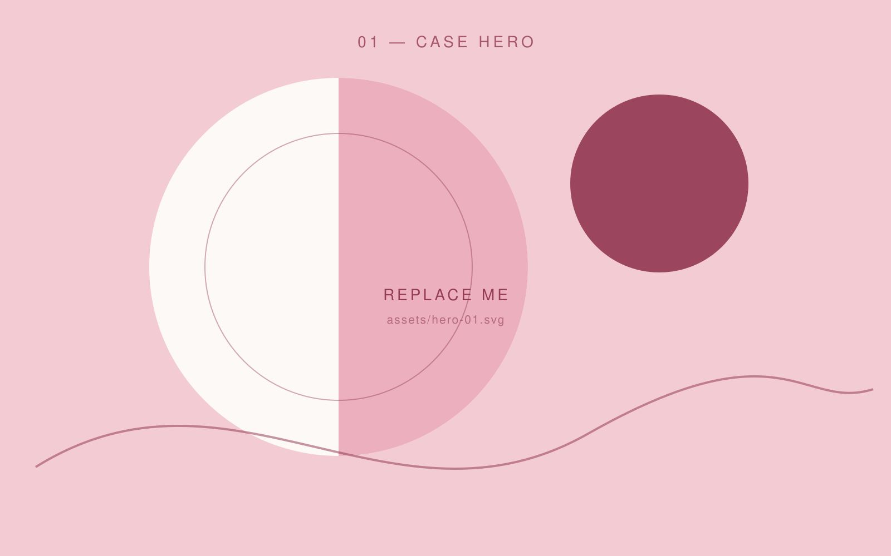
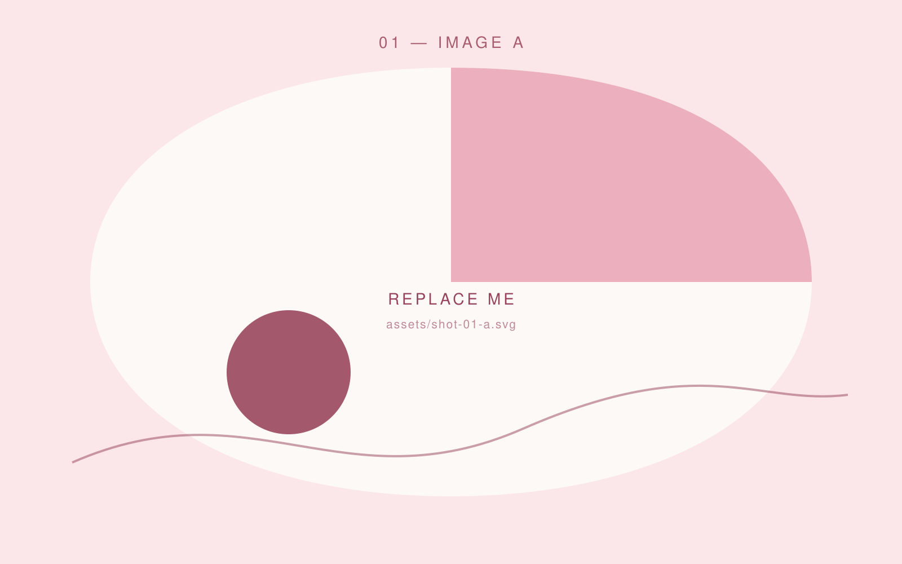
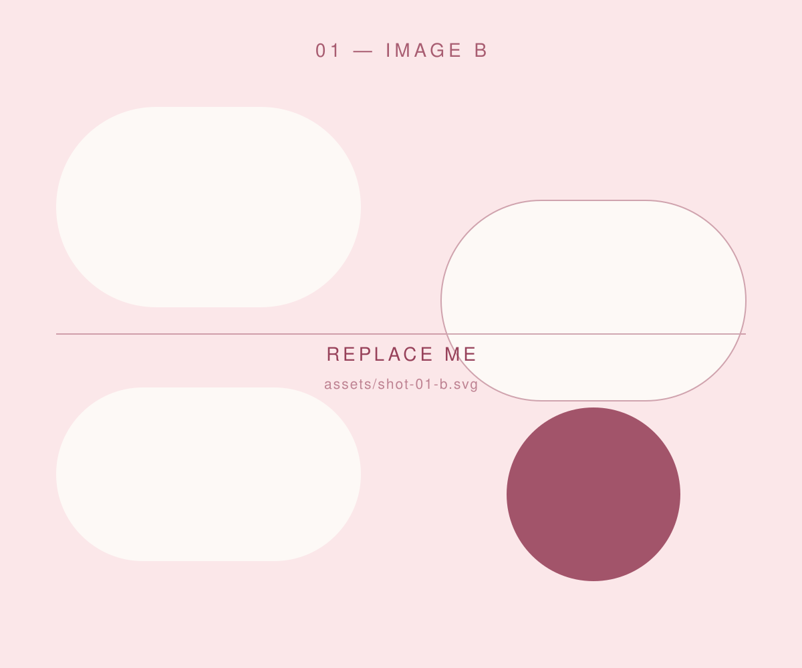

Project 01 — 2025 · UX/UI · App Design
Festival Finder
A mobile app that helps festival-goers find the stage, the food truck and their friends — without draining the battery or the patience.

The brief
Field research at two Dutch festivals showed that people open a festival app for three things: where am I, what is on right now, and where is everyone else. In the existing apps all three were buried under a programme feed nobody scrolled.
My approach
I mapped the journey from ticket to afterparty and designed everything around one map canvas, with a bottom sheet that swaps context instead of pushing you to a new screen. Two rounds of clickable prototypes, tested with eight users on an actual phone in actual sunlight.
The result
In the second round the task “find the next act on my list” dropped from 40 to 12 seconds. The interface runs on one accent colour and a 4-pt grid, which keeps it readable at noon on a dusty field.
Deliverables
- User research
- Journey map
- Wireflows
- Hi-fi prototype
- Design system


Next project — 02
Free the Map